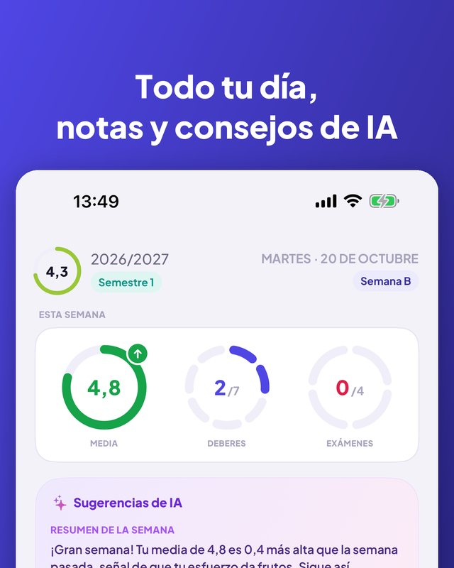
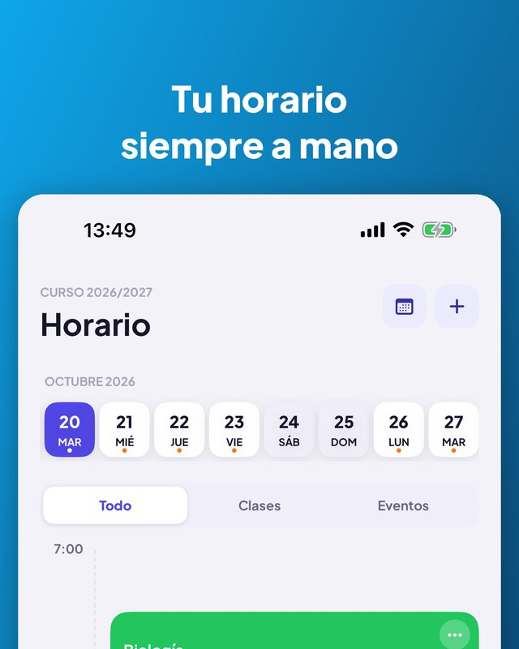
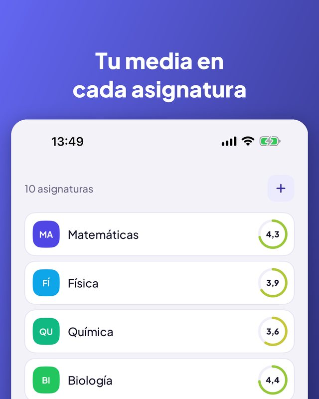
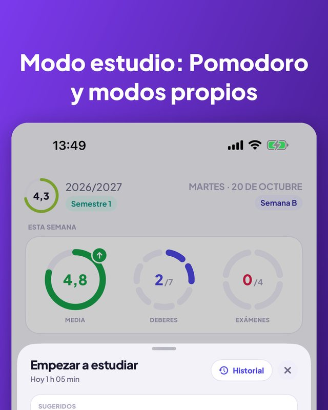
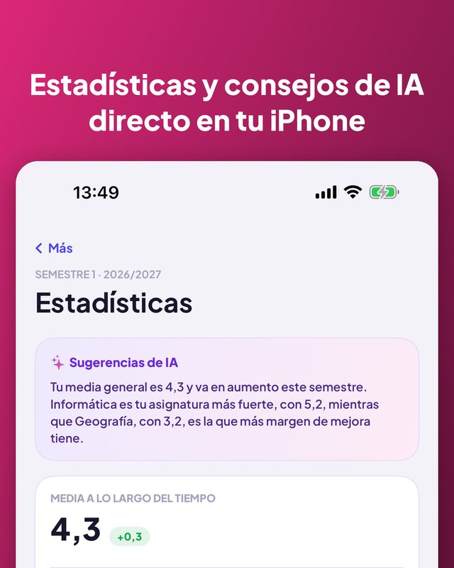

Kajet es un planificador para el colegio y la universidad. Todo tu día de un vistazo, notas con media, deberes y exámenes con recordatorios y un temporizador de estudio con Pomodoro. Sin cuenta, sin anuncios.


Vistas de día y semana, aulas, horas.
Cancelada, sustituida o en otra aula por un día.
Deporte, música, clases particulares, con aviso para salir.
La próxima clase en la pantalla de inicio y de bloqueo.
Tus propias categorías, comentarios y recuperaciones.
Evolución, mejor asignatura, la que más baja.
Créditos, notas finales, media ponderada por ECTS.
Fija un umbral y mira qué notas te faltan.
Hoy, mañana, esta semana, después. Márcalos con un toque.
Un día o tres antes, por la tarde o a la hora que elijas.
Cuenta atrás o Pomodoro, ligado a un examen.
7 días, un mes o un semestre, por asignatura.
Resumen semanal y cuándo estudiar. Solo en tu iPhone.
Pregunta por tu próxima clase o añade una nota por voz.
Empieza uno nuevo copiando el anterior.
Sigue el idioma de tu iPhone.



La app, el widget, Siri y los atajos están en 13 idiomas. Kajet sigue el idioma de tu iPhone.
Sin cuenta, sin anuncios y tus datos se quedan contigo.
Pensada para el sistema escolar y universitario polaco (notas del 1 al 6, escala universitaria de 2,0 a 5,0, ECTS), pero útil en cualquier lugar. Para iPhone con iOS 17 o posterior; los consejos de IA requieren iOS 26 y Apple Intelligence.